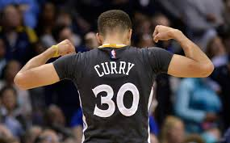
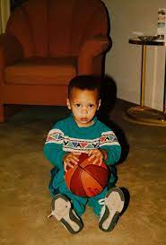
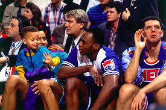
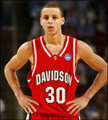
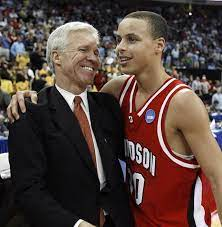
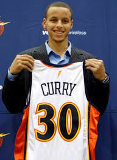
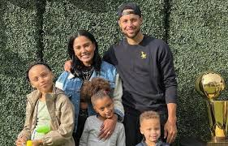
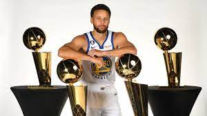

Back of Curry's jersey.
Young Curry
The Life of an NBA Player's Son

A very young Stphen Cury sitting with a plush basketballl
Wardell "Stephen" Curry Ⅱthe second or Steph Curry, as we know him, is an active NBA Player. He was born in Akron, Ohio, the eldest son of Wardell "Dell" Curry Sr., a former NBA player, and Sonya Curry, in 1983. He grew up with two younger siblings, Seth and Sydel Curry. Steph and his siblings grew up in NBA Arenas. With a 3PT shooting star for a father, the Curry kids had access to behind the scene activities some can only dream of. It has been said that Steph even attended practices with his father. Dell Curry played for three different teams during his tenure in the NBA. Throughout his childhood, it was common to see Steph and his siblings trying to participate in pre-game warm-ups or running through the filling arena stands.Dell spoken openly with USAB during an interview about his son. You can a link to the article in the Resources section. In 2019 during an interview with USAB when asked about a young Steph Curry. Dell Curry gave the following statement:
"He was energetic, always paid attention to what was going on, eager to learn. He tried several different sports, not just basketball. He played football, baseball, a little soccer. He was always very intuitive of what was going on around him. He just soaked it all up." - Dell Curry

A young Stephen Curry at his father's 3PT shooting contest. Posted on Twitter by Timeless Sports
Getting to spend his childhood around somme of the l egends in the game has greatly influenced Steph's love for the game. You can find several articles and videoes where past basketball stars speaking about a young Steph and his future potentenial in the sport. Through the support, love, and encouragement of his family Steph was able to gain the skills needed to earn a spot on his high school team. He played basketball at Charlotte Christian in North Carolina. While in high school he was named to the All State Team, All Conference Team, and won his Team's MVP award. He helped lead his team to three conference titles and three state playoff appearences. He ended his high school career ranked No. 16 in his state and No. 60 of all point guards National Wide.
Wildcat Years
Putting the nation on notice

Stephen Curry playing for Davidson College
Suprisingly Stephen Curry was not a highly sought after recruit. Towards the end of his high school career Stephen was only rated as an 3 star recruit. The highest rating a high school player can get is 5 and the lowest is 2. So being ranked so low amgonst other players across the country did not land him any scholarship offers. Curry had his eyes set on Virginia Tech to follow in his father's footsteps but after a try-out with the team he was only offered a walk-on role. However Steph knew he needed to go to a school where he would be guaranteed playing time if he wanted to make his dreams of going pro come true. It is no secret many colleges over looked Curry because of his physical appearance. At the end of his high school career, Stephen Curry stood at only 6'0 feet tall and weighed under 200 lbs which many deemed unsuitable for the cutthroat and physically demanding nature of college basketball. Which left his choices of colleges very slim. Stephen Curty agreed to join the Davidson College Wildcat basketball team. Where he began to blossom and show his true potential. In his freshmen year he accomplished many things. He set the record for most points(730)scored in a season by a freshmen at Davidson. Named

But despite a pretty great first season there were no calls from interested professional teams. Curry continued on to his second season as Wildcat. In his second year Curry once again helped his team make it to the NCAA College Basketball tournament. Where they blazed through the first three rounds with three upsets against higher ranking opponents, No.7 Gonzaga, No.2 Georgetown, and No.3 Wisconsin. Only being kept out of the Final Four round by a 2 point loss to Kansas in the Elite Eight round.
Warroir's Dynasty
4 NBA Champions Titles and 2 MVPAwards

Stephen Curry went into draft night unlike many other draftees. There had been hints of where he would end up. The New York Knicks, an NBA based in New York City, New York, made it known they were hoping to draft Curry as their pick in the 8th slot. But to the surprise of Steph, his mom, and the world he was choosen as the 7th pick of the 2009 draft. The San Francisco Golden State Warriors .
Life and Legacy
Can life be more than basketball

There are many things that can said about Stephen Curry on and off the court. You can find an exuberate amount of artivles, videos, and messages from people of all walks of life sharing their personal thoughts on him or meeting him.

Curry standing with trophies he has won